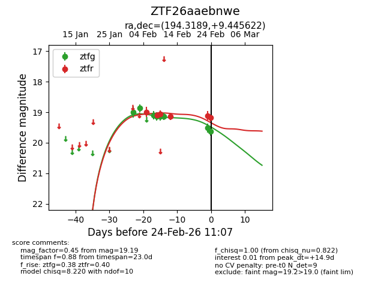
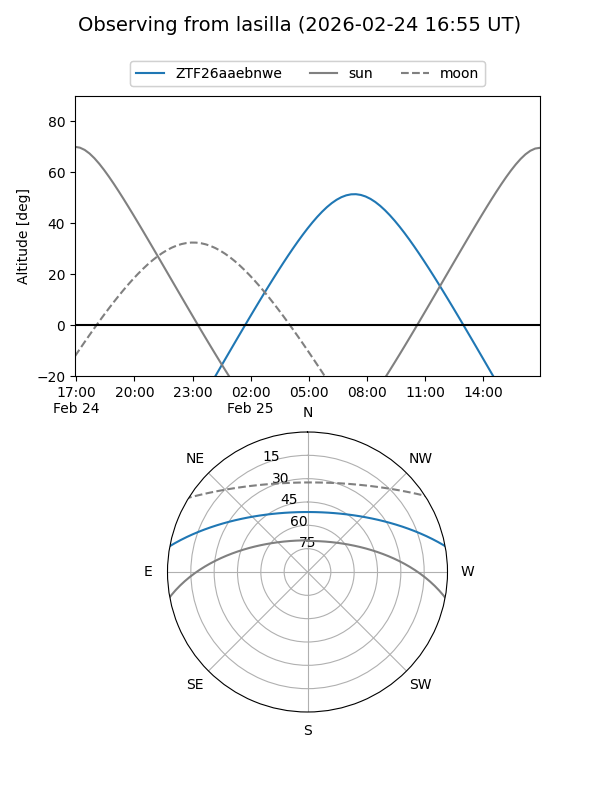
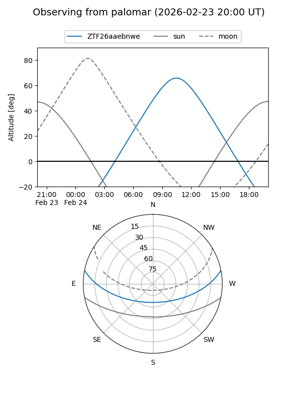
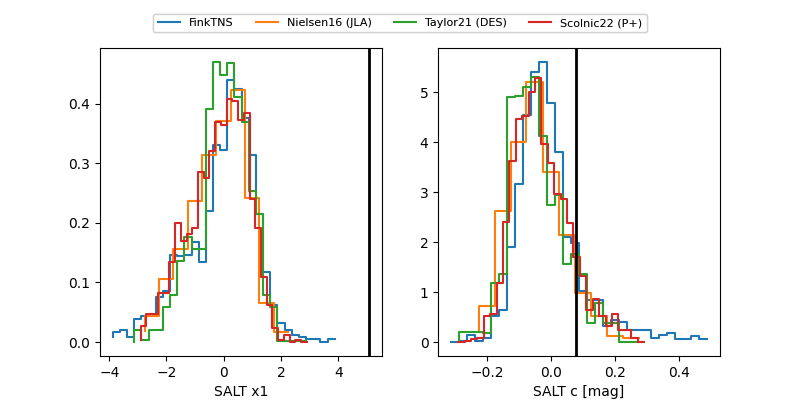

ZTF26aaebnwe
Target ZTF26aaebnwe at 2026-02-24 11:09
Aliases and brokers:
FINK: link
Lasair: link
ALeRCE: link
alt names
ZTF26aaebnwe (ztf,fink_ztf)
Coordinates:
equatorial (ra, dec) = 194.3189,+9.44562
equatorial (HMS+DMS) = 12:57:16.54,+09:26:44.24
galactic (l, b) = (307.6625,+72.26373)
Flags:
Photometry:
last ztfg=19.63, ztfr=19.19
9 ztfg, 6 ztfr detections
Lightcurve

Visibility


Additional plots
